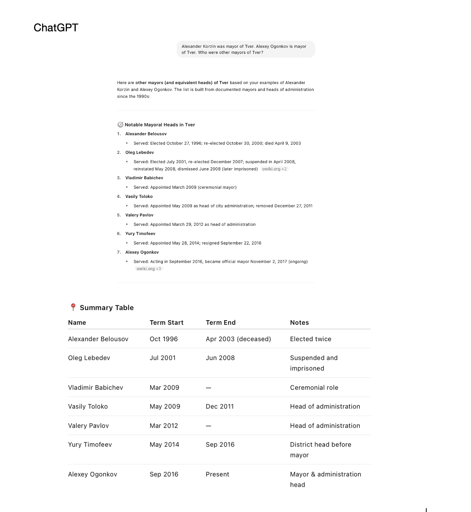

üß™ Case Study 1: Tver (Q2288) ‚Äî Rivers - Geographic Overview
Tver is a city known to be located near three rivers:
- Volga
- Tvertsa
- Tmaka
Wikidata currently only includes limited body of water links via property P206.
üîç SPARQL Check
Tver’s Location Relative to Water Bodies (Wikidata P206):
- Using Wikidata property P206, we identify bodies of water Tver (Q2288) is located in or next to.
- A SPARQL query retrieves these water bodies linked to Tver.
- This helps understand Tver’s geographic and environmental context.
SPARQL query:
https://w.wiki/Eb9V
Result:
https://w.wiki/Eb9X
Returns: [Only Volga River or one other]
ü§ñ LLM Cross-Validation
We used LLMs and zero-shot prompting technique to check what bodies of water Tver is located on:
- Gemini: View Result
- ChatGPT: returned the same answer (Volga, Tvertsa, Tmaka)
Missing: Tvertsa and Tmaka — despite being geographically significant.
ü߆ SPARQL QID Validation
We used SPARQL queries with keywords FILTER, REGEX and LIMIT to search rivers by their names, to check if they are on Wikidata and to find their QIDs:
- 1. Tvertsa
- Query: https://w.wiki/EbAx
- Result: https://w.wiki/EbB2
- 2. Tmaka
- Query: https://w.wiki/EbB7
- Result: https://w.wiki/EbBA
Result:
- Tvertsa River →
Q671890 - Tmaka River →
Q4467262
Both rivers are properly classified as instance of river (Q4022).
üîß RDF Triple Generation with LLMs
1. Tvertsa - zero-shot prompting
- Gemini returned a wrong QID:
Q2378instead ofQ2288 - We confirmed the correct QID through Wikidata
- Prompted Gemini to regenerate the RDF triple
- Gemini triple
- ChatGPT generated an accurate triple without error

2. Tmaka - zero-shot prompting
- Both ChatGPT and Gemini returned the same (correct) triple

✅ Outcome
- Discovered that Tver lacks full P206 relationships
- Proposed enrichment: add
- Tvertsa River →
P206 → Q671890 - Tmaka River →
P206 → Q4467262
- Tvertsa River →
- Demonstrated a repeatable method for improving Wikidata’s coverage
- Queried and validated relevant river entities
- Enriched the graph using RDF and Wikidata standards
- Contributed to the broader goal of open knowledge quality
üß™ Case Study 2: Political Leadership of Tver
Retrieving Tver's Political Leadership
To identify individuals who have served as mayor or in equivalent political roles for Tver, we used a SPARQL query that covers two data modeling patterns in Wikidata:
- Direct head of government (P6) relationships linked to Tver.
- Position held (P39) relationships where the role is a subclass of mayor (Q30185) and restricted to the location Tver (P642).
SPARQL Queries: we crafted a SPARQL query containing DISTINCT, OPTIONAL, UNION, FILTER, ORDER BY, LIMIT to extract names of mayors of Tver and start and end dates if their terms.
✅ Why this query works well:
- Handles multiple modeling styles (Wikidata isn’t always consistent).
- Uses UNION to combine both modeling approaches.
- Retrieves term dates if available.
- Returns clean, human-readable names via
?personLabel.
üóÇ Example Use:
This allowed us to extract leadership data and cross-check for inconsistencies or gaps in representation — a key part of ensuring that political data about Tver is complete and accurate.
Observation: Only two mayors — Alexander Korzin and Alexey Ogonkov — were listed, covering only from 2012 to the present, though the role has existed since 1991.
LLM Analysis
We used LLMs to check when the title of "mayor" appeared in Tver:
- ChatGPT: Identified 1991
- Gemini: Identified 1991 + provided historical background
Both ChatGPT and Gemini returned the same result(1991), the year when the modern day concept of a mayor appeared in Tver, meanwhile Gemini’s respose also contained some historical backround.
Generated RDF Triples for Missing Data
We used LLM and two-shot prompting technique to find the missing information about mayors and cover the gap. The output provided by ChatGPT was more detailed and comprehensive than that of Gemini.
- ChatGPT - two-shot prompting: 
- Gemini - two-shot prompting:
Using zero-shot prompting, we asked LLMs to generate missing RDF data for Tver's leadership Asked ChatGPT to produce RDF triples using Wikidata ontology to represent this information: Alexander Belousov was mayor from 1991 to 2003. Here is the result::
Then we used another LLM and chain-of-thought prompting, to check the correctness of the RDF data above:
Similar RDF triples were generated for:
- Oleg Lebedev (2001–2008)
- Vladimir Babichev (2009 ceremonial)
- Vasily Toloko (2009–2011)
- Valery Pavlov (2012–2014?)
- Yury Timofeev (2014–2016)
Each entry followed the same RDF structure using P39 and P6 properties, allowing for structured enrichment of Wikidata.
üîó Gemini Share: View Prompt